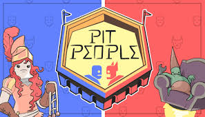
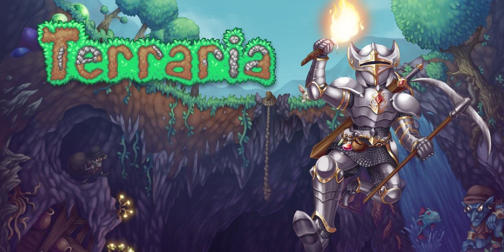

Top 5 recomendaciones de juegos PC
El PC es la plataforma por excelencia para jugar videojuegos (aunque no la mas popular) debido a su variedad y cantidad de titulos, pero muchos de ellos desaparecen antes de que el publico general pueda siquiera conocerlos. Aqui presentamos una lista de 5 juegos, que si bien no son desconocidos, no llegan a las masas como los triple A.
Pit People
RPG / Por Turnos¡En nuestra frenética aventura cooperativa por turnos podrás explorar, encontrar fabulosos botines, personalizar a
tus guerreros, reclutar especies extrañas y luchar en torneos!
¡Atraviesa un apocalíptico país de las
maravillas acompañado de un completo plantel de héroes trágicos y únicos!
Valoracion: Muy positivas (97% en Steam)

Terraria
Supervivencia / Aventura¡Cava, lucha, explora, construye! Nada es imposible en este juego de aventuras repleto de acción.
El mundo es tu lienzo y la tierra misma es tu pintura.
¡Coge tus herramientas y adelante! Crea armas para deshacerte de una gran variedad de enemigos en
numerosos ecosistemas. Excava profundo bajo tierra para encontrar accesorios, dinero y otras cosas
muy útiles. Reúne recursos para crear todo lo que necesites y conformar así tu propio mundo. Construye
una casa, un fuerte o incluso un castillo.
Valoracion: Muy positivas (98% en Steam)

They are Billions
RTS / SupervivenciaThey Are Billions es un juego de estrategia ambientado en un futuro lejano. Un puñado de humanos lucha por
sobrevivir protegidos en colonias fundadas sobre las ruinas de una civilización arrasada por el apocalipsis
zombie. Enjambres de millones de infectados deambulan por el mundo aniquilando a su paso a las últimas
colonias humanas.
Valoracion: Muy positivas (94% en Steam)

The Last Spell
RPG / SupervivenciaThe Last Spell es un juego de rol táctico con elementos de roguelite en el que tendrás que proteger una ciudad
contras las hordas de enemigos letales.
Durante el día, tendrás que preparar a tus héroes, pensar bien en cómo
reconstruir tu refugio y posicionar tus defensas. Durante la noche, deberás exterminar a los monstruos que atacarán
tus murallas con una gran variedad de armas y poderes. Cúrate y sube de nivel para repetir todo hasta romper el
sello mágico.
Valoracion: Muy positivas (97% en Steam)

Monster Sanctuary
Por Turnos / Metroidvania¡Adéntrate en el mundo basado en los metroidvania de Monster Sanctuary, explora las extensas tierras y convoca a tus
monstruos para que te ayuden dentro y fuera del combate! Usa sus habilidades únicas para volar, montar y luchar, y
así superar los puzles del entorno y los precisos niveles de plataformas. Eres libre de recorrer el mundo a tu propio
ritmo. ¿Tienes todo preparado para dominar el Santuario?
Valoracion: Muy positivas (98% en Steam)

Resumen de juegos
| Juego | Género | Jugadores | Valoracion |
|---|---|---|---|
| Pit People | RPG / Por Turnos | 1 - 4 | 97% |
| Terraria | Supervivencia / Aventura | Varios | 98% |
| They are Billions | RTS / Supervivencia | 1 | 94% |
| The Last Spell | RPG / Supervivencia | 1 | 97% |
| Monster Sanctuary | Por Turnos / Metroidvania | 1 | 98% |